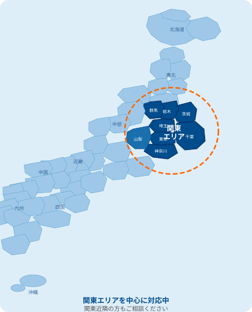

関東エリア 受付対応中！

雨漏りは放っておくと悪化します！
そうなる前にすぐに相談！
今ならすぐにご対応可能です！

他社では受付スタッフがマニュアルに沿って対応するのが一般的ですが、アメトメでは雨漏り診断士などの有資格者が直接電話に出ます。専門家だからこそ、お客様の状況に合わせた臨機応変な対応が可能です。


天井や壁にシミが
できている
雨の日に天井から
ポタポタ音がする
室内がカビ臭く
なってきた
屋根・外壁の
劣化が気になる
そのまま放置すると2次被害に繋がります！
今すぐ無料相談
「火災保険」の適用範囲には風災・雹災・雪災などの自然災害が含まれています。ほとんどの方がその権利を知らないまま保険料を払い続けています。まずはお気軽にご相談ください。
保険適用か無料確認＼ 様々な屋根の修理や防水工事などご相談ください ／
他社では一部だけで修理が可能な場合でも、家屋全体の修理見積りを出される場合がほとんどです。アメトメでは雨漏りの原因ごとに修理項目を細分化し、部分修理での対応を心がけております。
ガルバリウム鋼板
スレート
日本瓦
トタン
雨漏りは放っておくと悪化します！
そうなる前にすぐに相談！
今ならすぐにご対応可能です！

屋根の内部の腐食
瓦の下の防水紙劣化・土の流出
自分で修理をした後、
雨漏りが再発…
大切な家を
傷つけてしまうかも…
間違った修理をして
悪化してしまい…
雨漏りの原因をつきとめて確実に修理を行います。
建物の構造を熟知しているので的確な処理をいたします。
長年のノウハウから状況に応じた方法で修理をいたします。

スタッフがお客様の現場へうかがいます。現場の状況確認とお見積りをご提示。現地調査も無料ですのでお気軽にご相談ください。
お客様にもわかりやすいよう、丁寧な説明を心がけております。ご納得いただけるまで対応させていただきます。
雨漏り修理のプロが駆け付けます。屋根・外壁・窓・サッシの雨漏り修理など、雨漏りに関することなら何でもお任せください！
作業完了後、お見積りの金額をお支払いいただき終了です。アフターケアもしっかりと行います。

原因となる箇所は様々です。決めつけずヒアリングした上で、あらゆる仮説を立てます。
仮説を立てた上での目視診断をします。打診棒を用い触診するなど、念入りに判断します。
可能性がある箇所に実際に水をまき、水漏れの有無を確かめます。
赤外線カメラで映すことで、傷んだ箇所の温度差がわかります。外側から悪い箇所を発見できます。
単に経験がある人間が行うのではなく、「雨漏り診断士」という資格を持った者が直接対応します。専門的な知識と豊富な経験から判断し、対応・提案させていただきます。
他社では家屋全体の修理見積りを出される場合がほとんどですが、アメトメでは雨漏りの原因ごとに修理項目を細分化し、部分修理での対応を心がけております。
雨漏りはいつ起こるか予測ができません。夜間や土日でも24時間365日、関東エリアどこでも雨漏り修理のご相談を受け付けております。
電話対応は必ず雨漏り診断士などの有資格者が直接対応します。マニュアル対応ではなく、お客様の状況に合わせた臨機応変な対応が可能です。
アメトメは多くの修理実績を残しております。迅速・丁寧・安価を心がけたサービスを提供しております。

電話した際に雨漏り診断士の方が直接対応してくれて、状況を詳しく説明するだけで原因の見当をつけてもらえました。翌日には調査に来ていただき、迅速に修理完了。他社に断られた箇所も対応してもらえて大変助かりました。

深夜に急に雨漏りが発生し、慌てて電話しました。深夜にもかかわらず専門家の方が丁寧に応急処置の方法を教えてくれて、翌朝には修理に来てもらえました。料金も他社より安く、大変満足しています。

見積りが明確で追加料金が一切なかったのが安心でした。作業も丁寧で、修理後の説明も分かりやすかったです。雨漏り診断士の資格を持った方が対応してくれるので、信頼感が全然違います。
はい、24時間365日受け付けております。深夜・早朝・土日祝日も対応可能です。まずはお電話ください。
雨漏りは雨水が建物内部を伝って、発生箇所から離れた場所に出てくることがあります。原因箇所の特定が重要ですので、まずは無料調査をご利用ください。
風向きや雨量によって雨漏りが発生したりしなかったりすることがあります。症状が軽いうちに原因を特定することが重要です。
はい、現地調査・お見積りは完全無料です。お見積り後に作業をキャンセルされても費用は一切かかりません。
クロスのカビは雨漏りや結露が原因であることが多いです。放置すると構造材の腐食につながりますので、早めのご相談をおすすめします。
はい、調査から修理まで一貫して対応いたします。屋根・外壁・ベランダ・サッシなど様々な箇所に対応しております。
24時間365日、年中無休で受付しております

関東近隣の方もご相談ください
※上記以外のエリアはお問い合わせください
雨漏り診断士が直接ご相談に対応します
無料通話 0120-094-95624時間365日受付中！携帯電話・PHSもOK！